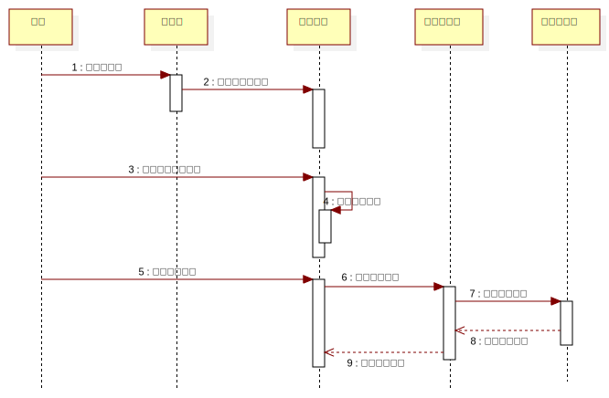

InteractionInstanceSet1
UMLInteraction
PlanAssistant
::
«analysisModel»Analysis Model
::
添加精力数据
::
InteractionInstanceSet1
Description
none
Diagrams

精力曲线添加精力数据序列图
Participants
用户
主界面
精力曲线
数据库服务
精力曲线表
Messages
打开主界面 (用户→主界面)
初始化精力曲线 (主界面→精力曲线)
添加精力曲线数据 (用户→精力曲线)
显示添加界面 (精力曲线→精力曲线)
填写精力数据 (用户→精力曲线)
提交精力数据 (精力曲线→数据库服务)
保存精力数据 (数据库服务→精力曲线表)
返回添加结果 (精力曲线表→数据库服务)
更新精力曲线 (数据库服务→精力曲线)
Properties
Name
Value
name
InteractionInstanceSet1
stereotype
null
visibility
public
isReentrant
true
Owned Elements
精力曲线添加精力数据序列图